24/05/2025 — Và bây giờ là một điều hoàn toàn khác (một ca điện sinh lý rất khó)
Bản dịch tiếng Việt của bài "And now for something completely different (a very difficult electrophysiology case)" – Dr. Smith’s ECG Blog. Giữ nguyên toàn bộ 27 hình ảnh của bản gốc.

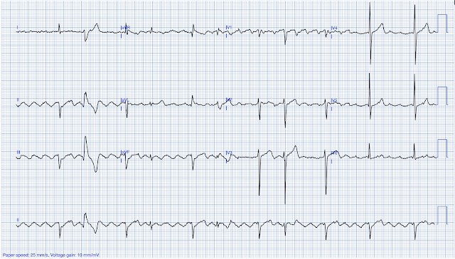
Tác giả: Willy Frick
“Hai lần ngất trong tháng qua. Chỉ nói tiếng Pháp. Không đau ngực hay khó thở.”
Hình 1: Điện tâm đồ

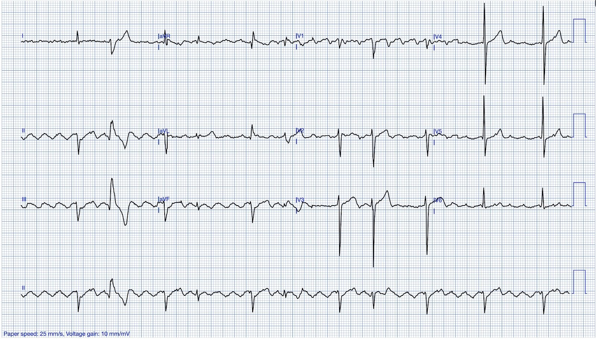
Đó là toàn bộ bệnh sử tôi có khi xem điện tâm đồ này. Hãy quan sát và thử xem bạn có thể gọi tên được bao nhiêu chẩn đoán và hiện tượng điện sinh lý trước khi đọc tiếp.
Bệnh nhân này không có bảo hiểm y tế và được khám tại một phòng khám từ thiện dành cho người nghèo, nên đáng tiếc là không thể làm các xét nghiệm chẩn đoán chuyên sâu. Tôi được biết bệnh nhân đã được chuyển tới chuyên khoa điện sinh lý, nhưng tôi không có thông tin theo dõi nào chắc chắn. Những gì trình bày sau đây là cách diễn giải của riêng tôi; tuy nhiên tôi đã thảo luận điện tâm đồ này với vài người bạn, và một số người nghiêng về cách diễn giải khác, cụ thể là về hình dạng QRS.
Bắt đầu với nhịp nhĩ, đường nền nhấp nhô gây chú ý ngay lập tức. Trông có vẻ hợp lý là cuồng nhĩ (flutter), nhưng có hai vấn đề tiềm ẩn.
Vấn đề tiềm ẩn thứ nhất là chuyển đạo I tương đối ít bị ảnh hưởng, điều này gợi khả năng nhiễu từ điện cực chân trái (chuyển đạo I là chuyển đạo duy nhất không dùng điện cực chân trái). Tuy nhiên, có hai lập luận ủng hộ đây là cuồng nhĩ thật. Thứ nhất, tần số khoảng 240 nhịp/phút, vừa đúng khoảng giới hạn dưới của một tần số cuồng nhĩ hợp lý. Và nó CỰC KỲ đều như thấy trong hình dưới đây. Thứ hai, cấu trúc của các phức bộ QRS được dẫn truyền khớp rất đẹp với một giản đồ bậc thang (ladder diagram) sẽ được bàn ở phần dưới.
Hình 2: Hoạt động nhĩ rất đều [người dịch: nguyên văn ghi “Highly atrial activity”, nhiều khả năng thiếu chữ “regular”]

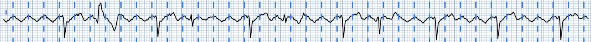
Vấn đề có thể có thứ hai là hình dạng sóng không hẳn phù hợp với cuồng nhĩ điển hình. Cuồng nhĩ điển hình là một vòng vào lại đi ngược chiều kim đồng hồ quanh vòng van ba lá, và kinh điển là tạo ra các sóng cuồng nhĩ “dương” ở V1 và “âm” ở các chuyển đạo dưới. Đây là một đánh giá chủ quan, và trong một số trường hợp bạn có thể tự thuyết phục mình rằng sóng đi theo cả hai hướng — xét cho cùng thì đó là một vòng vào lại. Trong ca này, tôi cho rằng V1 cho thấy một cách thuyết phục các sóng cuồng nhĩ chủ yếu âm.
Hình 3: Sóng cuồng nhĩ âm ở V1

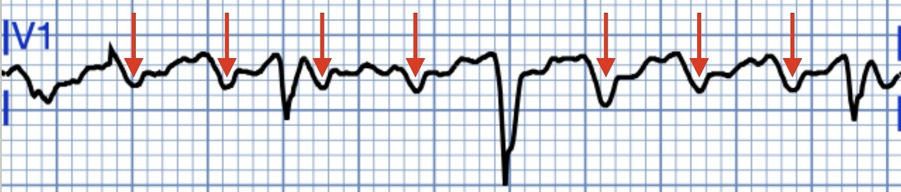
Giải thích khả dĩ nhất ở đây là cuồng nhĩ điển hình “đảo ngược” (reverse typical flutter), tức là một vòng vào lại theo chiều kim đồng hồ quanh vòng van ba lá. Đây là một bài tổng quan xuất sắc về chủ đề này. Dưới đây là một điện tâm đồ khác của một bệnh nhân khác cho thấy cuồng nhĩ điển hình đảo ngược, đã được xác nhận bằng thăm dò điện sinh lý (EP).
Hình 4: Cuồng nhĩ theo chiều kim đồng hồ

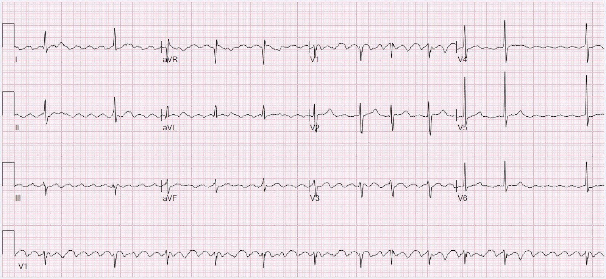
Chuyển sang nhịp thất trong ca của chúng ta, sẽ hữu ích nếu nhìn lại dải nhịp chuyển đạo II mà tôi đã sao lại ở đây, có đánh nhãn các sóng R.
Hình 5: Dải nhịp chuyển đạo II

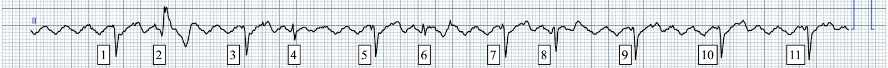
Nếu nhìn đủ lâu, bạn có thể nhận ra có vài “nhóm” sóng R khác nhau. R1 và R2 đi cùng nhau rồi có một chỗ ngắt. R3 và R4 đi cùng nhau rồi có một chỗ ngắt. Tương tự với R5-6 và R7-8. Sau đó R9-11 đứng riêng lẻ nhưng xuất hiện cách nhau đều đặn. Khi cuồng nhĩ tạo ra các hình mẫu nhịp theo nhóm (group beating) lặp lại, nhưng không khớp với một kiểu dẫn truyền n:1 dễ giải thích, thì rất có thể là do blốc nhiều tầng (multilevel block).
Bạn hỏi blốc nhiều tầng là gì? Vấn đề này đã được bàn trên blog này trước đây. Khung khái niệm của tôi, dựa trên bài báo kinh điển này của Kosowski và cs. , gồm tổng cộng ba tầng có thể bị blốc trong nút AV. Tầng trên có thể gây blốc 2:1, tầng giữa có thể tạo tính chu kỳ Wenckebach, và tầng dưới lại có thể gây dẫn truyền 2:1. Ở hầu hết bệnh nhân, trong phần lớn thời gian, mỗi tầng đều dẫn truyền 1:1. Khi bạn thấy cuồng nhĩ kèm blốc 2:1, thì một trong các tầng đang “hoạt động” và hai tầng còn lại dẫn truyền 1:1. Khi bạn thấy 4:1, nhiều khả năng đó là hai blốc 2:1 nối tiếp nhau, còn tầng còn lại dẫn truyền 1:1. (Hãy nhớ rằng 2:1 có thể được xem là chu kỳ Wenckebach ngắn nhất có thể.)
Hình 6: Khung lý thuyết

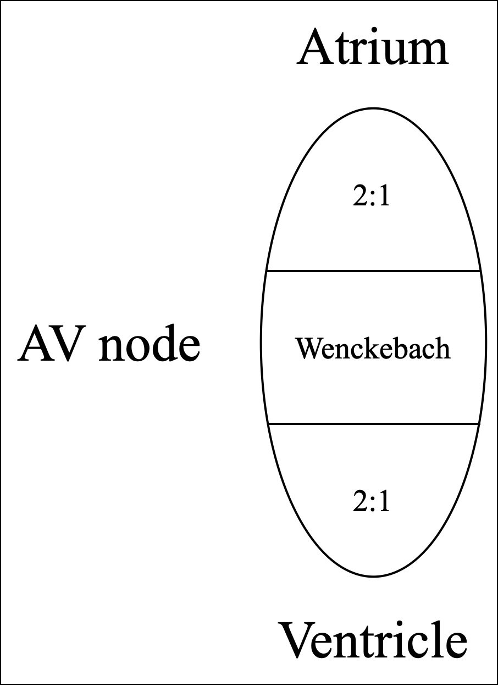
Để tìm ra cách sắp xếp, bạn phải tìm một đoạn của hình mẫu lặp lại, rồi đếm tất cả các lần hoạt hóa nhĩ và tất cả các lần hoạt hóa thất để xác định tỷ lệ. Sau đó thường chỉ là chuyện thử tổ hợp một cách “cơ bắp”. Cách sắp xếp hay gặp nhất là 2:1 ở tầng trên và Wenckebach ở tầng dưới (với tầng thứ ba, ngầm hiểu, dẫn truyền 1:1). Ví dụ, hãy xem điện tâm đồ này do Basit Masoodi gửi cho tôi.
Hình 7: Ví dụ không liên quan

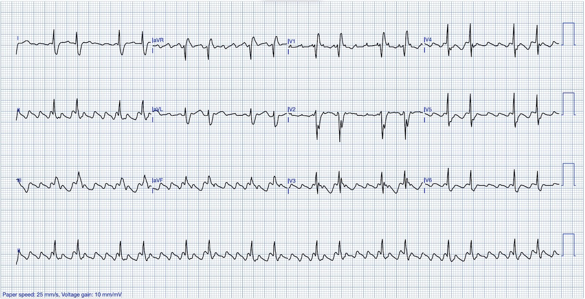
Quan sát cho thấy tỷ lệ hoạt hóa nhĩ:thất là 6:2. Làm sao để có được tỷ lệ này theo khung ở trên? Làm sao biến 6 thành 2? Này nhé, nếu bắt đầu bằng 2:1, thì 6 xung nhĩ lập tức giảm còn 3. Sau đó chỉ cần thêm một chu kỳ Wenckebach 3:2 và tổng hợp lại là 6:2. Điều này được minh họa bên dưới. (Lưu ý rằng hoạt hóa nhĩ được vẽ thành đường zích zắc để biểu thị vòng vào lại của cuồng nhĩ.)
Hình 8: Giản đồ bậc thang cho Hình 7

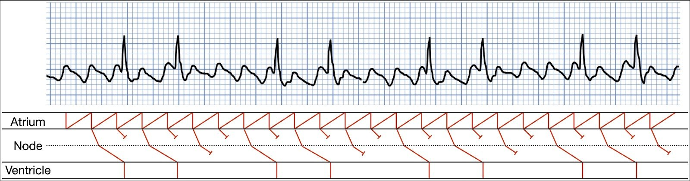
Đây là một ví dụ khác:
Hình 9: Một ví dụ không liên quan khác

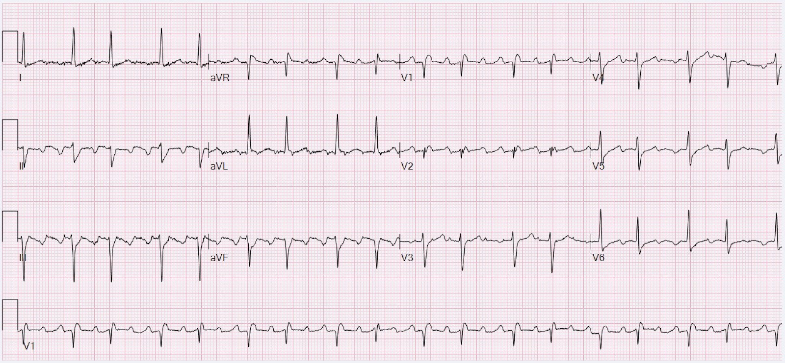
Nếu đếm tất cả các lần hoạt hóa, ta có tỷ lệ nhĩ:thất là 5:2. Ngay lập tức, ta biết tầng 2:1 trên cùng không thể đang hoạt động. Nếu không, ta sẽ có 5 ÷ 2 = 2.5 xung đi qua được tầng thứ nhất, trong khi số này luôn phải là số nguyên. Vậy thay vào đó, tầng thứ nhất phải là Wenckebach (vì tầng 2:1 trên cùng không hoạt động), tức là 5:4. Rồi để từ 4 thành 2, ta có 2:1 ở tầng dưới. Điều này được minh họa bên dưới. (Kỹ năng vẽ giản đồ bậc thang của tôi đã khá hơn kể từ khi vẽ hình này, xin bỏ qua những khác biệt về phong cách.)
Hình 10: Giản đồ bậc thang cho Hình 9

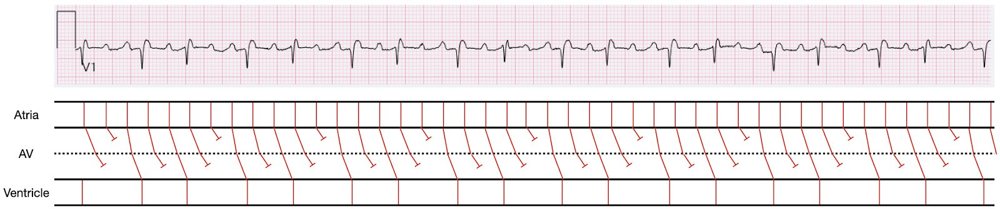
Bây giờ, quay lại điện tâm đồ trong bài này, ta không thấy một tỷ lệ hoạt hóa nhĩ:thất nguyên nhất quán trên toàn bộ dải nhịp.
Hình 5: Dải nhịp chuyển đạo II
Tuy nhiên, nếu chỉ tập trung vào phần đầu của điện tâm đồ (R1-8), ta có thể nhận ra tỷ lệ 6:2. Điều này gợi nhớ điện tâm đồ ở Hình 7 và gợi ý 2:1 ở tầng trên cùng với 3:2 ở tầng dưới. Khi đó ta chỉ còn phải giải thích R9-11. Thực tế, chúng cho thấy dẫn truyền 4:1 rất đều! Nói cách khác là 2:1 nối tiếp 2:1. Điều này được minh họa bên dưới.
Hình 11: Blốc nhiều tầng với 2:1 ở tầng trên và dẫn truyền thay đổi ở tầng dưới

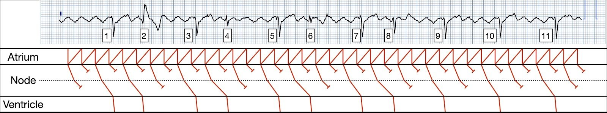
Lưu ý rằng BS Grauer và tôi, mỗi người tự làm độc lập, đã đưa ra chính xác cùng một giản đồ bậc thang cho ca này! Còn một dấu hiệu trên điện tâm đồ cần giải thích, đó là hình dạng QRS thay đổi. Việc này đòi hỏi phân tích đủ cả 12 chuyển đạo.
Hình 1: Điện tâm đồ
Hình dạng QRS hay gặp nhất là hình dạng thấy ở R1, 3, 5, 7, 9, 10, 11. Xem các chuyển đạo chi, nó có blốc phân nhánh trái trước (LAFB). Ngược lại, R2 có hình dạng RBBB (kèm LPFB). Đây là do hiện tượng Ashman: trong các nhịp không đều, một chu kỳ R-R dài (giữa sóng R xuất hiện trước khi điện tâm đồ này bắt đầu ghi và R1) theo sau bởi một chu kỳ R-R ngắn (giữa R1 và 2) dẫn tới dẫn truyền lệch hướng liên quan tần số, kinh điển là dạng RBBB.
Làm sao giải thích sự thay đổi trục ở R4 và R6? BS Grauer và tôi có cách diễn giải khác nhau, nhưng đây là cách của tôi: tôi cho rằng R4 và R6 thể hiện “dẫn truyền siêu bình thường” (supernormal conduction) qua phân nhánh trái trước. Mô tả đầy đủ về dẫn truyền siêu bình thường nằm ngoài phạm vi bài này. Tóm lại, có một cửa sổ thời gian ngắn gần lúc kết thúc sóng T mà trong đó phức bộ QRS kế tiếp có cơ hội được dẫn truyền tốt hơn mong đợi. Trong ca này, nền của bệnh nhân là LAFB, nhưng R4 và R6 không còn trông giống LAFB mà chỉ trông như dẫn truyền bình thường. Dẫn truyền siêu bình thường gần như là mặt đối lập của hiện tượng Ashman.
Tôi không có lời giải thích gọn gàng cho việc vì sao R8 khác R4 và R6. Phỏng đoán tốt nhất của tôi là nó không hẳn “siêu bình thường bằng”, và có thể vẫn còn dẫn truyền qua phân nhánh trái trước (LAF) nhưng bị chậm. Tôi đã thể hiện điều này trên giản đồ bậc thang cuối cùng của mình dưới đây.
Hình 12: Giản đồ bậc thang cuối cùng

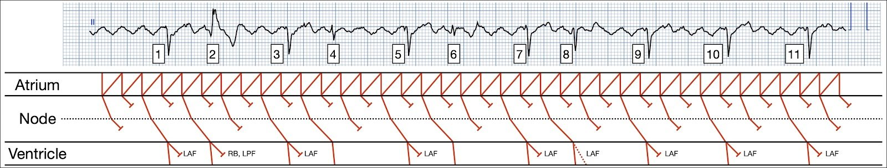
Vậy, tóm lại:
- Cuồng nhĩ điển hình đảo ngược
- Blốc nhiều tầng, 2:1 ở tầng trên và Wenckebach thay đổi ở tầng dưới (3:2 rồi 2:1)
- Blốc phân nhánh trái trước là kiểu dẫn truyền QRS “nền”
- Dẫn truyền lệch hướng liên quan tần số gây blốc hai phân nhánh (RBBB + LPFB) ở R2
- Dẫn truyền siêu bình thường qua phân nhánh trái trước ở R4 và 6
- Dẫn truyền siêu bình thường một phần qua phân nhánh trái trước ở R8
Đáng tiếc là không có thông tin theo dõi cho bệnh nhân này. Lý tưởng nhất là ông ấy được triệt đốt cuồng nhĩ, biện pháp chữa khỏi cho phần lớn bệnh nhân. Liệu các cơn ngất của ông có liên quan đến blốc mức độ cao hơn vào một thời điểm nào đó không? Điều đó chắc chắn là có thể.

===================================
BÌNH LUẬN CỦA TÔI, bởi KEN GRAUER, MD (24/5/2025):
===================================
Tôi thấy bản ghi ban đầu trong ca hôm nay mà BS Frick chia sẻ với tôi thật hấp dẫn — và minh họa cho một số nguyên lý quan trọng liên quan đến việc giải quyết các bài toán rối loạn nhịp phức tạp, đầy thử thách.
- Xin nhấn mạnh: Các khái niệm mà BS Frick và tôi trình bày là nâng cao. Những khái niệm này liên quan đến cách giải thích bằng giản đồ bậc thang (laddergram). Dù vậy — tôi nhấn mạnh trong Bình luận của tôi dưới đây rằng vẽ giản đồ bậc thang không phải là yêu cầu bắt buộc để trở nên thành thạo trong xử trí rối loạn nhịp cấp cứu một cách hiệu quả về thời gian.
- Tôi đã mất rất nhiều năm để thành thạo vẽ giản đồ bậc thang. Nhưng học cách đọc giản đồ bậc thang thì DỄ (và ngay cả khi bạn chưa từng thấy một giản đồ bậc thang nào trước khi đọc bài Blog này — bạn sẽ hiểu được cách diễn giải thông tin mà một giản đồ bậc thang cung cấp sau khi xem xong Bình luận của tôi).
==================================
LƯU Ý: Dành cho những ai muốn thành thạo vẽ giản đồ bậc thang:
- Bình luận của tôi ở cuối trang trong bài ngày 16 tháng Năm năm 2020 trên Dr. Smith’s ECG Blog — trình bày từng bước một cách tôi vẽ giản đồ bậc thang cho một ca blốc AV phức tạp khác.
- Với bạn đọc muốn có thêm hướng dẫn và chỉ dẫn (kèm LINK tới hơn 120 ví dụ giản đồ bậc thang có giải thích — và quyền tải MIỄN PHÍ Power Point Laddergram Stencil (mẫu vẽ giản đồ bậc thang) của tôi) — BẤM VÀO ĐÂY —
==================================
Cách Tiếp cận của tôi với CA bệnh Hôm nay:
Như BS Frick đã nêu ở trên trong phần bàn luận tuyệt vời của anh — anh ấy và tôi đi đến những kết luận tương tự về bản chất của nhịp hôm nay. Tuy nhiên — Cách tiếp cận của chúng tôi có phần khác nhau.
Trước hết — Cách tiếp cận Không dùng giản đồ bậc thang của tôi:
- Để rõ ràng, trong Hình 1 — tôi đã tách riêng dải nhịp dài chuyển đạo II từ bản ghi hôm nay. Như BS Frick đã nêu — nhịp nền là AFlutter (cuồng nhĩ – Atrial Flutter).
- Tôi luôn bắt đầu bằng bước đơn giản là đánh số các nhát. Ngoài việc là cách nhất quán duy nhất để bảo đảm mọi bác sĩ liên quan đều biết chắc chắn đang nói đến nhát nào — Chẳng phải các con số đã gợi ý một hình mẫu của nhịp này sao?
- GỢI Ý: Câu trả lời cho câu hỏi này được tiết lộ dưới đây trong Hình 2.

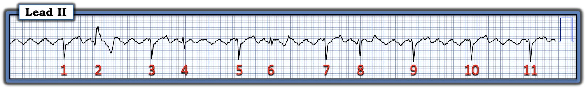
TRẢ LỜI:
Như gợi ý bởi mã màu của các mũi tên hai đầu trong Hình 2 — có nhịp theo nhóm!
- Như Dr. Frick đã nêu — nhịp nền là AFlutter. Và lý do chúng ta biết có một dạng dẫn truyền nào đó trong cơn cuồng nhĩ này là: i) Khoảng R-R nhìn chung không đều (trong khi NẾU nhịp kèm AFlutter là blốc AV hoàn toàn — thì nhịp thoát thất phải khá đều); và, ii) Khoảng PR đứng trước mỗi nhát kết thúc một khoảng R-R dài hơn là BẰNG NHAU (tức là, Tất cả các mũi tên đôi màu VÀNG trong Hình 2 có thời gian đúng bằng nhau — trong khi NẾU nhịp là blốc AV hoàn toàn thì khoảng này sẽ thay đổi liên tục).
- LƯU Ý #1: Nhịp trong Hình 2 bắt đầu bằng 4 cặp nhát — trong đó các khoảng R-R ngắn hơn rồi dài hơn luân phiên nhau (Thời gian của các mũi tên đôi màu XANH LAM đều bằng nhau — và thời gian của các mũi tên đôi màu ĐỎ dài hơn cũng bằng nhau). Khi đã luyện tập — “con mắt” của bạn sẽ nhận ra kiểu nhát lặp lại này chỉ trong vài giây.
- Điểm MẤU CHỐT: Khi tôi đã nhận ra nhịp nền trong Hình 2 là AFlutter — và có nhịp theo nhóm với khoảng PR hằng định trước mỗi nhát kết thúc một khoảng R-R dài hơn — tôi biết ngay nhịp này là AFlutter kèm blốc Wenckebach AV hai tầng ở đường ra khỏi nút AV. Tôi không cần giản đồ bậc thang nào để đi đến kết luận này trong vòng chưa tới 20 giây.
Các điểm bổ sung về Hình 2:
- Dùng compa đo lập tức giúp bạn vừa giỏi hơn vừa nhanh hơn! Xin nhấn mạnh rằng tôi chưa bao giờ rút compa đo ra khi bệnh nhân trước mặt đang “sụp đổ”. Dù vậy — phần lớn thời gian trong quá trình xử trí một ca bệnh, sẽ có một “khoảnh khắc” bạn có thời gian dùng compa đo. Người thầy thuốc không bao giờ dùng compa đo — là người sẽ chẩn đoán sai một số lượng đáng kể các rối loạn nhịp phức tạp hơn.
- LƯU Ý #2: Kiểu nhịp theo nhóm trong Hình 2 thay đổi ở 2 nhát cuối của bản ghi, khi các “nhóm” không còn gồm 2 nhát nữa. Dù vậy — vẫn có một quy luật, ở chỗ thời gian của các mũi tên đôi màu HỒNG là như nhau. Xin nhấn mạnh rằng quy luật của các blốc kiểu Wenckebach không phải lúc nào cũng hoàn hảo, vì vậy sự thay đổi này ở nhát #10 và 11 không làm thay đổi nhận định tức thời của tôi là AFlutter kèm blốc Wenckebach ở đường ra khỏi nút AV.

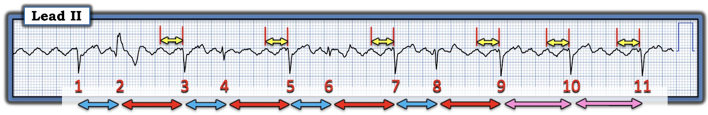
==================================
Tiếp theo — Cách tiếp cận của tôi bằng giản đồ bậc thang:
- Để rõ ràng, trong Hình 1 — tôi đã tách dải nhịp DII dài từ bản ghi hôm nay. Như Dr. Frick đã nêu — nhịp nền là AFluter (cuồng nhĩ — Atrial Flutter).

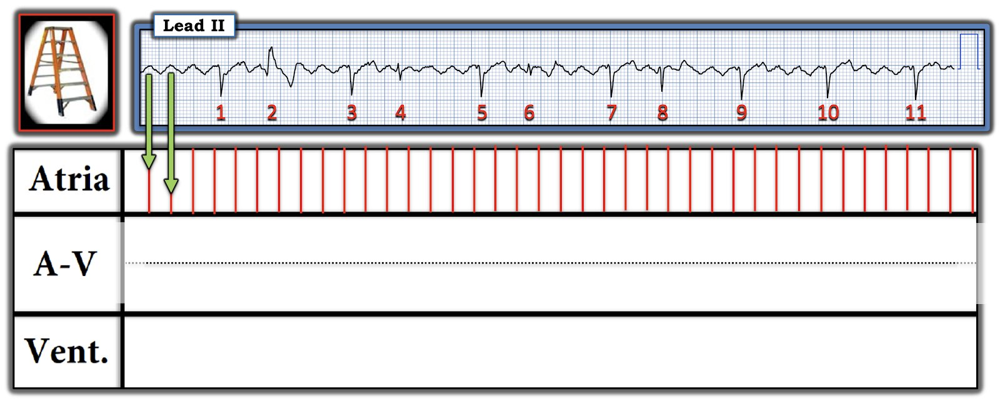
= = = = =
LƯU Ý: Vì tôi nghi ngờ có blốc AV hai tầng bên trong nút AV — tôi đã chia Tầng Nút AV thành 2 phần (bằng cách vẽ một đường chấm ngang màu ĐEN).

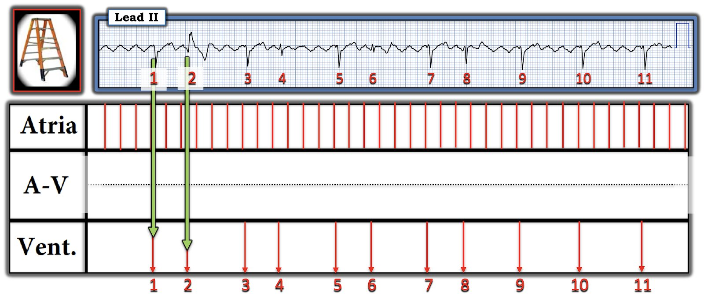
Các mũi tên XANH LỤC chỉ điểm khởi đầu của mỗi phức bộ QRS, làm mốc tham chiếu cho từng phức bộ QRS trong bản ghi này.
= = = = =
Điểm MẤU CHỐT: “Phần DỄ” khi dựng hầu hết các giản đồ bậc thang gồm 2 BƯỚC đầu tiên này (được trình bày trong Hình 3 và 4). Giờ thì thử thách mới bắt đầu — đó là cố gắng “giải” giản đồ bậc thang bằng cách tìm ra những sóng P nào (trong ca này là các sóng cuồng nhĩ) ở Tầng Nhĩ được dẫn truyền xuống tâm thất.

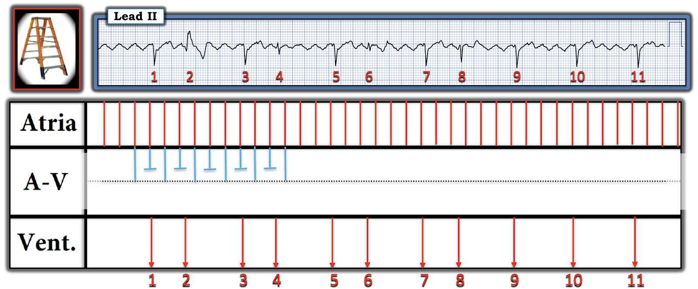
LƯU Ý: Thay vì tốn thời gian quý báu vẽ dẫn truyền của tất cả các xung cuồng nhĩ ở tầng trên của nút AV — tôi quyết định thử trên một đoạn nhỏ của kiểu lặp lại (các đường màu XANH LAM mà tôi đã thêm vào Tầng Nút AV phía trên).
= = = = =
Điểm MẤU CHỐT: Do “dẫn truyền ẩn” — các sóng cuồng nhĩ nằm rất gần một phức bộ QRS thường không thể dẫn truyền xuống tâm thất. Nhận biết hiện tượng này cho ta một manh mối quan trọng để giả định sóng cuồng nhĩ nào nhiều khả năng được dẫn truyền nhất.

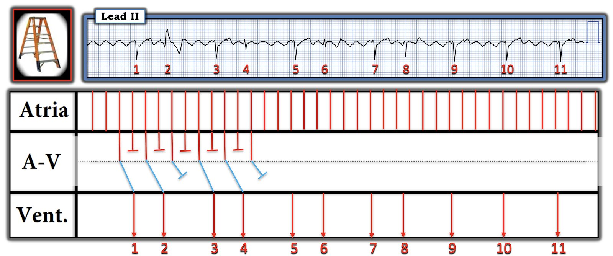

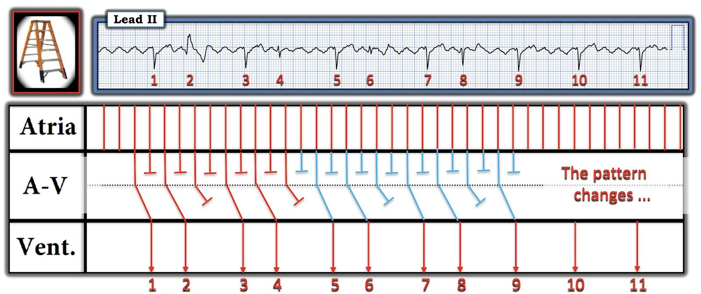
= = = = =
LƯU Ý #1: Như Dr. Frick đã bàn ở trên — dẫn truyền lệch hướng hay dẫn truyền siêu bình thường là những cách giải thích khả dĩ cho hình dạng QRS thay đổi của các nhát #2,4,6 và 8. Nhưng kiểu nhịp theo nhóm với các khoảng R-R ngắn-rồi-dài luân phiên vẫn giữ nguyên ở cả bốn nhóm 2 nhát này.
= = = = =
LƯU Ý #2: Lý do tôi không điền đường dẫn qua nút AV cho nhát #9 và 10 — là vì kiểu nhịp theo nhóm thay đổi.

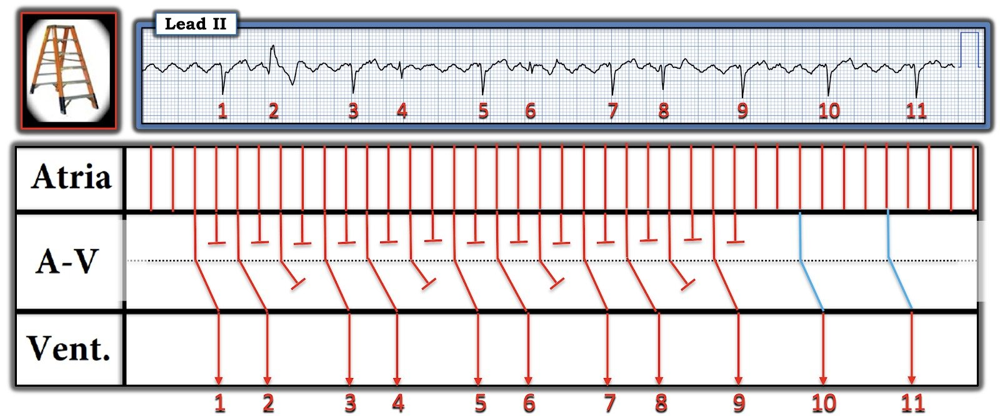

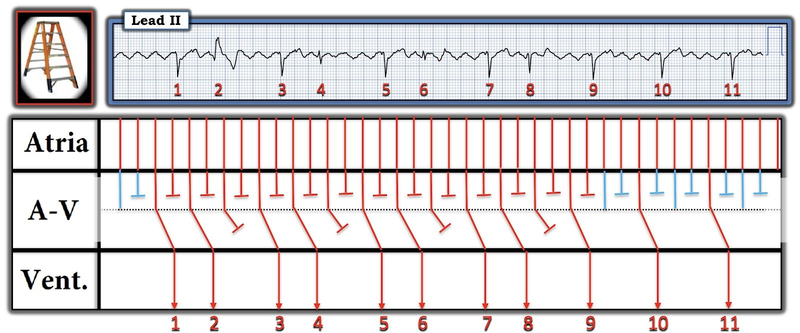

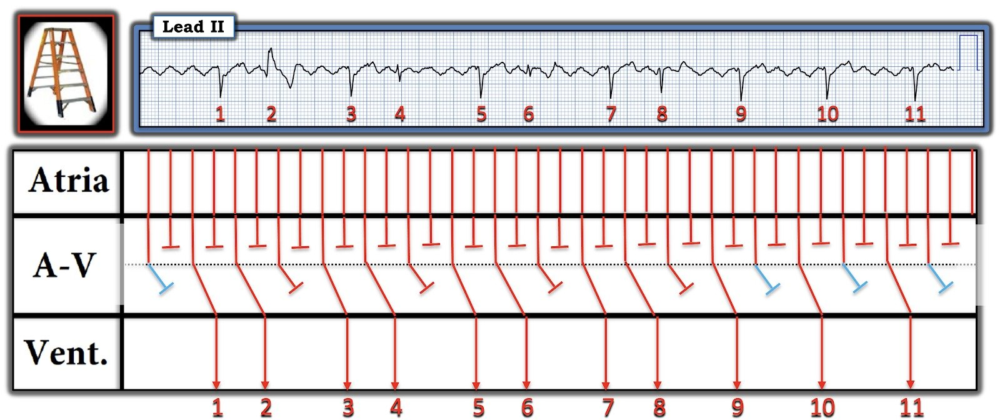
==================================
Giản đồ bậc thang CUỐI CÙNG:
Để rõ ràng, trong Hình 11 — tôi đã mã hóa màu một số sóng cuồng nhĩ được chọn để giúp nhận ra kiểu dẫn truyền trong bản ghi hôm nay:
- Các mũi tên ĐỎ — chỉ rõ những sóng cuồng nhĩ nào dẫn truyền phức bộ QRS thứ 1 trong các nhóm 2 nhát, và phức bộ QRS duy nhất trong các nhóm 1 nhát ở cuối bản ghi.
- Các mũi tên XANH LAM — chỉ rõ những sóng cuồng nhĩ nào mất thời gian lâu hơn một chút để đi qua tầng dưới của nút AV trong các nhóm 2 nhát.
- Các mũi tên VÀNG — chỉ rõ những sóng cuồng nhĩ nào bị blốc ở tầng dưới của nút AV.
- LƯU Ý — Kiểu lặp lại của các mũi tên mã hóa màu này làm nổi bật tính nhất quán của nhịp theo nhóm trong bản ghi hôm nay.

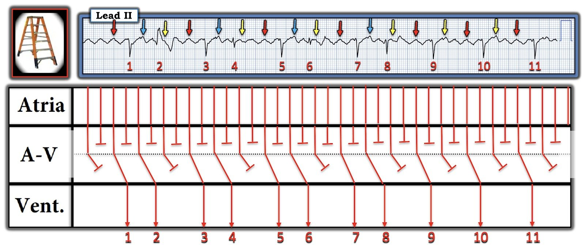
==================================
“Điều cần nhớ” :
Cần nhớ: Rất thường gặp nhịp theo nhóm trong AFlutter — và — thường sẽ có blốc AV hai tầng đối với các sóng cuồng nhĩ nhanh này ở đường ra khỏi nút AV.
- Ngay cả khi không phải vẽ giản đồ bậc thang — chúng ta vẫn có thể nhanh chóng nhận ra dẫn truyền Wenckebach hai tầng ở đường ra khỏi nút AV khi thấy nhịp theo nhóm xảy ra cùng với các sóng cuồng nhĩ không dẫn truyền liên tiếp (như thấy rõ trong Hình 11) — đặc biệt khi có các khoảng PR giống hệt nhau trước nhiều nhát.
- “Tin tốt” — là các sóng cuồng nhĩ không dẫn truyền liên tiếp này không nhất thiết biểu thị một dạng blốc AV cố định (bệnh lý)! Thay vào đó — dẫn truyền AV 1:1 bình thường đôi khi sẽ trở lại khi AFlutter được chuyển về nhịp xoang.